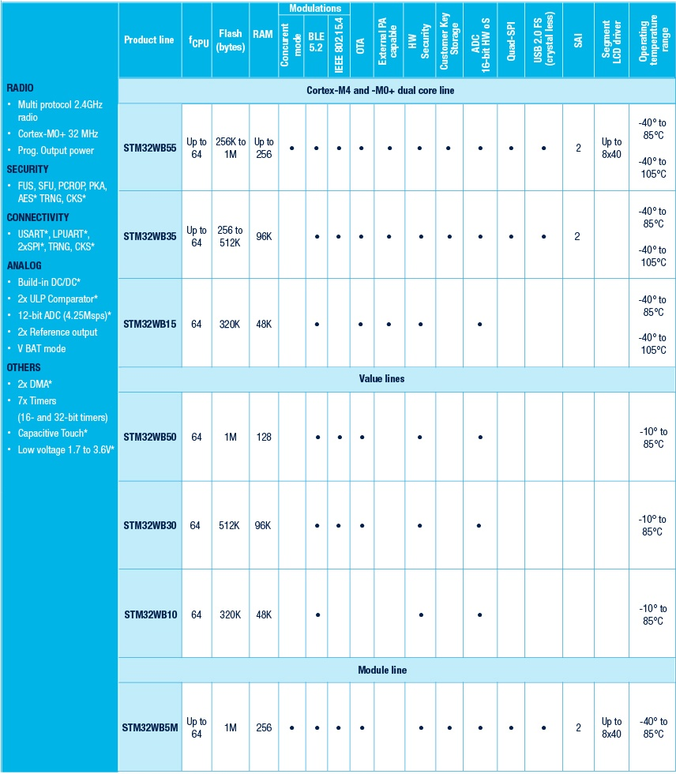
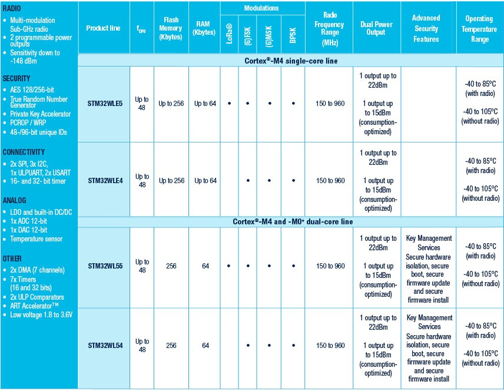

ST¶
MCU STM32 MPU MEMS
公司简介¶
意法半导体是全球最大的半导体公司之一，MCU领域的王者，其产品拥有庞大的工程师群众基础和开发资源。
分类 |
性能范围 |
内存配置 |
封装规格 |
定价范围 |
核心特点 |
|---|---|---|---|---|---|
性能产品¶
Price |
|||||||
|---|---|---|---|---|---|---|---|
3224 |
|||||||
2778 |
|||||||
2424 |
|||||||
1414 |

无线通信¶
 超低功耗¶

技术特点¶
ADC¶
DAC¶
DSP¶
FMAC¶
Filter mathematical accelerator
16 x 16-bit multiplier
24+2-bit accumulator with addition and subtraction
16-bit input and output data
256 x 16-bit local memory
Up to three areas can be defined in memory for data buffers (two input, one output),defined by programmable base address pointers and associated size registers
Input and output sample buffers can be circular
Buffer “watermark” feature reduces overhead in interrupt mode
Filter functions: FIR, IIR (direct form 1)
AHB slave interface
DMA read and write data channels
GUI¶
DMA2D¶
DMA2D首先是一个DMA，DMA能做的内存操作DMA2D肯定是不成问题，其次DMA2D有自己独有的颜色填充（也叫寄存器到存储器）、颜色格式转换、透明度混合（层混合）
颜色填充（矩形区域）（寄存器到存储器）
图像（内存）复制（存储器到存储器）
颜色格式转换（如YCbCr转RGB或RGB888转RGB565）
透明度混合（Alpha Blend）
ART¶
HDMI CEC¶
CEC协议是一个单总线，低速协议传输速度只有0.3Kbps。它使用HDMI线缆的第13号引脚。

CEC使用类似DS18B20的单总线协议，分为数据位和起始位，每个数据位有严格的时序定义，其中数据位时长为2.4ms，起始位时长为4.7ms。由于CEC总线传输速率很低，总线协议又不是很复杂，非常适合MCU来处理。一个完整的CEC数据帧